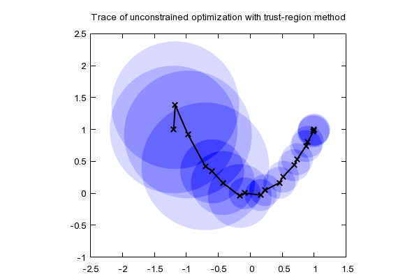
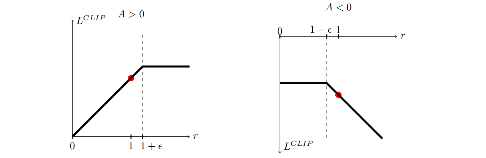

Your browser doesn't support the features required by impress.js, so you are presented with a simplified version of this presentation.
For the best experience please use the latest Chrome, Safari or Firefox browser.
Advanced On-Policy RL
Hao Su
(slides prepared with the help from Shuang Liu)
Winter, 2023
Agenda
click to jump to the section.
Review: Policy Gradient Theorem (Discounted)
- Policy Gradient Theorem (Discounted):
\[
\nabla_{\th}V^{\pi_{\theta, \gamma}}(s_0) = \sum_s\sum_{t = 0}^{\infty}\gamma^t\mu_t(s;s_0) \sum_{a}\nabla_{\theta}\pi_{\theta}(s, a) \cdot Q^{\pi_{\theta}, \gamma}(s, a).
\]
$\mu_t(s;s_0)$ is the average visitation frequency of the state $s$ in step $k$.
- Can you guess the influence of $\gamma$ in this result?
We will assume the discounted setting from now on.
Review: Creating an Unbiased Estimate for PG
We have shown that
\begin{align*}
\nabla_{\theta}V^{\pi_{\theta}, \gamma}(s_0)=\mathbb{E}\left[\sum_{t = 0}^{\infty}\gamma^t\nabla_{\theta}\ln\left(\pi_{\theta}(s_t, a_t)\right)\cdot \sum_{i = t}^{\infty} \gamma^{i - t}\cdot r_i\right]\\
\end{align*}
- Using more trajectories, we can get more accurate gradient estimate (smaller variance)
- Since the unbiased estimate is a summation, we can sample from the individual terms to do batched gradient descent
We have established an MC sampling based method to
estimate the gradient of value w.r.t. policy parameters!
This estimate is unbiased.
- In literature, this MC-sampling based policy gradient method is called REINFORCE.
REINFORCE Algorithm
The steps involved in the implementation of REINFORCE would be as follows:
- Randomly initialize a policy network that takes the state as input and returns the probability of actions
- Use the policy to play $n$ episodes of the game. Record $(s,a,s',r)$ for each step.
- Calculate the discounted reward for each step backwards
- Calculate expected reward $G_t=\sum_{i=t}^{\infty}\gamma^{i-t}r_i$
- Adjust weights of policy according to the gradient by policy gradient theorem
- Repeat from 2
Practical First-Order Policy Optimization
Advanced Value Estimates
- We have seen that we can use $\sum_{i = t}^{\infty} \gamma^{i - t} \cdot r_i$ as an unbiased estimate for $Q^{\pi_{\theta}, \gamma}(s_t, a_t)$.
- While this estimate is unbiased, it has high variance, as all past rollouts are not used.
-
We can also have a value network $v_{\omega}(s)$ to try to memorize (the estimates of) $V^{\pi_{\theta}, \gamma}(s)$ during the training. This way, whenever we need an estimate of $Q^{\pi_{\theta}, h}(s_t, a_t)$, we can use
- $e_{t, \infty} = \sum_{i = t}^{\infty} \gamma^{i - t}\cdot r_i$, which is unbiased but has high variance.
- $e_{t, 0} = r_t + \gamma\cdot v_{\omega}(s_{t + 1})$, which is biased but possibly has lower variance.
- $e_{t, h} = \sum_{i = t}^{t+h} \gamma^{i - t}\cdot r_i + \gamma^{h + 1}\cdot v_{\omega}(s_{t+h+1})$, which has a trade-off between the first two, depending on the choice of $h$.
- $\sum_{h = 0}^{\infty} \alpha_h e_{t,h}$, further combines different $e_h$'s with tunable weights $\alpha_h$'s that summing to $1$.
Advantage
- We also introduce another statistics trick to reduce the variance of the value estimation without introducing bias.
- Suppose that $X$ and $Y$ are two random variables.
- Recall that, if $Z=X-Y$, then
\[
\mathrm{Var}[Z]=\mathrm{Var}[X]+\mathrm{Var}[Y]-2\mathrm{Cov}(X,Y)
\]
- If $X$ and $Y$ are strongly correlated, then $\mathrm{Var}[Z]$ is smaller than $\mathrm{Var}[X]$ and $\mathrm{Var}[Y]$.
- For example, $X, Y\sim\bb{N}(0, 1)$, then $\mathrm{Var}[Z]=2-2\rho$, where $\rho$ is the Pearson correlation coefficient and $-1\le \rho\le 1$. For highly correlated $X$ and $Y$, $\rho \approx 1$, and $\mathrm{Var}[Z]\approx 0$.
- For this reason, we introduce the function $A^{\pi_{\theta}, \gamma}(s, a)=Q^{\pi_{\theta}, \gamma}(s, a) - V^{\pi_{\theta}, \gamma}(s)$, which is called advantage.
- Our next goal is to relate $\nabla V^{\pi_{\theta}, \gamma}(s,a)$ with $A^{\pi_{\theta}, \gamma}(s, a)$, which has smaller variance than estimating through $Q^{\pi_{\theta}, \gamma}(s, a)$.
Advantage Estimates
\begin{align*}
\nabla_{\theta}V^{\pi_{\theta}, \gamma}(s_0)
&= \sum_s\sum_{t = 0}^{\infty}\gamma^t\mu_t(s;s_0)
\left(\sum_{a}\nabla_{\theta}\pi_{\theta}(s, a) \cdot Q^{\pi_{\theta}, \gamma}(s, a) - 0\right)\\
\text{(why?)}&= \sum_s\sum_{t = 0}^{\infty}\gamma^t\mu_t(s;s_0)
\left(\sum_{a}\nabla_{\theta}\pi_{\theta}(s, a) \cdot Q^{\pi_{\theta}, \gamma}(s, a) - \sum_{a}\nabla_{\theta}\pi_{\theta}(s, a)\cdot V^{\pi_{\theta}, \gamma}(s)\right)\\
&= \sum_s\sum_{t = 0}^{\infty}\gamma^t\mu_t(s;s_0)
\sum_{a}\nabla_{\theta}\pi_{\theta}(s, a) \cdot \left(Q^{\pi_{\theta}, \gamma}(s, a) - V^{\pi_{\theta}, \gamma}(s)\right).\\
&= \sum_s\sum_{t = 0}^{\infty}\gamma^t\mu_t(s;s_0)\sum_{a}\nabla_{\theta}\ln\left(\pi_{\theta}(s, a)\right) \cdot \pi_{\theta}(s, a) A^{\pi_{\theta}, \gamma}(s, a)\\
&=\mathbb{E}\left[\sum_{t = 0}^{\infty}\gamma^t\nabla_{\theta}\ln\left(\pi_{\theta}(s_t, a_t)\right)\cdot A^{\pi_{\theta}, \gamma}(s_t, a_t)\right]
\end{align*}
- Q: Does this form look reasonable? Compare it with the update for REINFORCE.
Advantage Estimates (Cont'd)
-
Recall that we said $Q^{\pi_{\theta}, \gamma}(s_t, a_t)$ can be estimated by $\sum_{h = 0}^{\infty}\alpha_h e_{t,h}$ in general, where
\[
\left\{
\aligned{
&e_{t,h} = \sum_{i = t}^{t+h} \gamma^{i - t}\cdot r_i + \gamma^{h + 1}\cdot v_{\omega}(s_{t+h+1})\\
&\sum_{i = 0}^{\infty} \alpha_i = 1
}
\right.
\]
- The very popular General Advantage Estimate (GAE) estimates the advantage in the same fashion and it chooses $\alpha_i$ to be proportional to $\lambda^i$, where $\lambda\in[0, 1]$.
Advantage Estimates (Cont'd)
- Define $\delta_{t,h}=e_{t,h}-v_{\omega}(s_{t})=\sum_{i = t}^{t+h} \gamma^{i - t}\cdot r_i + \gamma^{h + 1}\cdot v_{\omega}(s_{t+h+1}) - v_{\omega}(s_{t})$
- The General Advantage Estimate (GAE) estimates $A^{\pi_{\theta}, \gamma}(s_t, a_t)$ by
\begin{align*}
\hat{A}_{\text{GAE}(\lambda)}^{\pi_{\theta}, \gamma}(s_t, a_t) &= (1 - \lambda)\sum_{h = 0}^{\infty} \lambda^h\delta_{t,h}\\
(\text{calculation omitted, HW}) &=\sum_{h = 0}^{\infty}(\gamma\lambda)^{h} \delta_{t+h, 0}
\end{align*}
-
Define $0^0 = 1$, $\hat{A}_{\text{GAE}(0)}^{\pi_{\theta}, \gamma}(s_t, a_t) = r_t + \gamma v_{\omega}(s_{t + 1}) - v_{\omega}(s_{t}).$
-
We also have $\hat{A}_{\text{GAE}(1)}^{\pi_{\theta}, \gamma}(s_t, a_t) = \sum_{h = 0}^{\infty}\gamma^{h} r_{t+h} - v_{\omega}(s_t). $
-
We leave the proofs to homework.
- Q: How to interpret the role of $\lambda$?
Incremental Monte Carlo
Value Function Estimation
- Recall that our plan was to have a value network $v_{\omega}(s)$ to memorize the estimates of $V^{\pi_{\theta}, \gamma}(s)$ during the training.
- In practice, certain variants of the incremental Monte-Carlo method will be used to update $v_{\omega}(s)$
- e.g., in Sec 5 of High-Dimensional Continuous Control Using Generalized Advantage Estimation,
\[
\aligned{
&\text{minimize}_{\omega} && \sum_{n=1}^N\|v_{\omega}(s_n)-\hat{V}_n\|^2\\
&\text{subject to} && \frac{1}{N}\sum_{n=1}^N\frac{\|v_{\omega}(s_n)-v_{\omega_{old}}(s_n)\|^2}{2\sigma^2}\le \epsilon
}
\]
where $\hat{V}_t=\sum_{h=0}^{\infty}\gamma^h r_{t+h}$ is the discounted sum of rewards, and $n$ indexes over all timestamps in a batch of trajectories.
- Note that we do not need a replay buffer to estimate $v_{\omega}(s)$.
Some Additional Information
Given any advantage estimate $\hat{A}^{\pi_{\theta}, \gamma}(s_t, a_t)$, we can estimate the policy gradient by
\begin{align*}
\hat{\nabla}_{\theta}V^{\pi_{\theta}, \gamma}(s_0)
=\mathbb{E}\left[\sum_{t = 0}^{\infty}\gamma^t\nabla_{\theta}\ln\left(\pi_{\theta}(s_t, a_t)\right)\cdot \hat{A}^{\pi_{\theta}, \gamma}(s_t, a_t)\right].
\end{align*}
However, in most implementations, people simply use
\begin{align*}
\hat{\nabla}_{\theta}V^{\pi_{\theta}, \gamma}(s_0)
=\mathbb{E}\left[\sum_{t = 0}^{\infty}\nabla_{\theta}\ln\left(\pi_{\theta}(s_t, a_t)\right)\cdot \hat{A}^{\pi_{\theta}, \gamma}(s_t, a_t)\right].
\end{align*}
Efficient and Stable Policy Optimization
On-Policy RL vs. Off-Policy RL
\[
\hat{\nabla}_{\theta}V^{\pi_{\theta}, \gamma}(s_0)
=\mathbb{E}_{\color{red}{\pi_{\theta}}}\left[\sum_{t = 0}^{\infty}\nabla_{\theta}\ln\left(\pi_{\theta}(s_t, a_t)\right)\cdot \hat{A}^{\pi_{\theta}, \gamma}(s_t, a_t)\right].
\tag{PGT}
\]
vs.
\[
\nabla_{\th}L(\th)=\bb{E}_{\color{red}{(s,a,s')\sim \rm{Replay Buffer}}}[\nabla_{\th}\|Q_{\th}(s,a)-[R(s,a,s')+\gamma\max_{a'}Q_{\th}(s',a')]\|^2]\tag{TD}
\]
- On-policy RL:
- To use PGT, we need a trajectory under the current policy to compute the gradient. RL of this kind is called on-policy.
- We must sample actions by the current policy and interact with the environment until the end of an episode. If we revise the policy, we must resample actions and interact with the environment.
- Off-policy RL: To use Bellman optimality equation, we sample with distribution NOT as the current policy.
Make Better Use of Samples for On-Policy RL
- Rollouts are precious. It is natural to ask, how can we make the best use of the recent rollouts?
- Some straight-forward solutions:
- using big step size;
- multiple gradient descents on the same set of rollouts;
- However, PGT only gives a local approximation of gradient. Above approaches cause instability in policy updates.
Trust-region Method
\[
\begin{aligned}
&\underset{x}{\text{minimize}}&&f(x)\\
\end{aligned}
\]
- Iterate:
- Solve a constrained sub-problem
\[
\begin{aligned}
& \underset{x}{\text{minimize}} &&\tilde{f}_{x_k}(x)\\
&\text{subject to}&&D(x,x_k)\le \epsilon
\end{aligned}
\]
- $x_{k+1}=x; k\leftarrow k+1$
$\tilde{f}_{x_k}(x)$ is a local approximation of $f$ near $x_k$ (e.g., linear or quadratic Taylor's expansion), and $D(\cdot, x_k)\le \epsilon$ restricts the next step $x$ to be in a local region of $x_k$.

https://optimization.mccormick.northwestern.edu/index.php/Trust-region_methods
We compute the gradient (and Hessian) of $f$
for once, but we can use it to update $x$
for multiple steps safely!
Basic Framework of Trust-region Policy Optimization (e.g, TRPO/PPO)
TRPO/PPO repeat the following procedure:
- Sample multiple (say, 128) trajectories of certain length (say, 128) to get a minibatch of state-actions pairs (say, 128 * 128 $(s, a)$ pairs)
- Estimate the advantage of each $(s, a)$ pair using GAE (say GAE($0.95$)) and the corresponding trajectory
- Solve the (mini-batch) local subproblem multiple times (say, mini-batch of size 128 * 32, 16 gradient descents)
Trust-region Method for Policy Optimization
- Our policy gradient theorem gives us $\nabla_{\theta}V^{\pi_{\theta}, \gamma}(s_0)$; however, to apply trust-region method, we need an optimization form.
- Recall the form of PGT:
\[
\hat{\nabla}_{\theta}V^{\pi_{\theta}, \gamma}(s_0)
=\mathbb{E}_{\pi_{\theta}}\left[\sum_{t = 0}^{\infty}\nabla_{\theta}\ln\left(\pi_{\theta}(s_t, a_t)\right)\cdot \hat{A}^{\pi_{\theta}, \gamma}(s_t, a_t)\right].
\]
- Our idea to derive a trust-region based method algorithm.
We use a series of surrogate objective functions $\ell_{\theta_k}(\theta)$
whose gradient is the same as the gradient from PGT at each step.
Trust-region Method for Policy Optimization
- Consider some possible surrogate loss functions
\[
\begin{aligned}
\ell^1_{\color{red}{\theta_k}}(\theta)&=\bb{E}_{\color{red}{\pi_{\theta_k}}}\sum_{t=0}^{\infty} \frac{\pi_{\theta}(s_t,a_t)}{\color{red}{\pi_{\theta_k}}(s_t,a_t)}A^{\color{red}{\pi_{\theta_k}}, \gamma}(s_t,a_t) &\text{(ratio loss)}\\
\ell^2_{\color{red}{\theta_k}}(\theta)&=\bb{E}_{\color{red}{\pi_{\theta_k}}} \sum_{t=0}^{\infty} \ln \pi_{\theta}(s_t,a_t)A^{\color{red}{\pi_{\theta_k}}, \gamma}(s_t,a_t)=\bb{E}_{\color{red}{\pi_{\theta_k}}} \sum_{t=0}^{\infty} \ln \frac{\pi_{\theta}(s_t,a_t)}{\color{red}{\pi_{\theta_k}}(s_t,a_t)}A^{\color{red}{\pi_{\theta_k}}, \gamma}(s_t,a_t)+C &\text{(log ratio loss)}\\
\ell^3_{\color{red}{\theta_k}}(\theta)&=\bb{E}_{\color{red}{\pi_{\theta_k}}} \sum_{t=0}^{\infty} [\nabla_{\theta}\ln \pi_{\theta}(s_t,a_t)]\vert_{\color{red}{\color{red}{\theta_k}}}A^{\color{red}{\pi_{\theta_k}}, \gamma}(s_t,a_t)(\theta-\color{red}{\theta_k}) &\text{(first-order Taylor)}
\end{aligned}
\]
- It is easy to verify that
\[
\nabla_{\theta}\ell^1_{\color{red}{\theta_k}}(\theta)\vert_{\theta=\theta_k}=\nabla_{\theta}\ell^2_{\color{red}{\theta_k}}(\theta)\vert_{\theta=\theta_k}=\nabla_{\theta}\ell^3_{\color{red}{\theta_k}}(\theta)\vert_{\theta=\theta_k}\equiv
\nabla_{\theta}V^{\pi_{\theta}, \gamma}(s_0)\vert_{\theta=\theta_k}
\]
- TRPO (Trust-region Policy Optimization) method picks the ratio loss as the objective.
Trust-region Method for Policy Optimization
The local constrained subproblem in TRPO:
\[
\aligned{
& \underset{\theta}{\text{maximize}} && \mathbb{E}_{\pi_{\theta_k}}\sum_{t=0}^{\infty} \frac{\pi_{\theta}(s_t,a_t)}{\pi_{\theta_k}(s_t,a_t)}A^{\pi_{\theta_k}, \gamma}(s_t,a_t)\\
& \text{subject to} && \mathbb{E}_{\pi_{\theta_k}}[\mathrm{KL}(\pi_{\theta_k}(s,\cdot)\|\pi_{\theta}(s,\cdot))]\le \delta
}
\]
The constraint restricts that $\pi_{\theta}$ not deviates much from $\pi_{\theta_k}$.
- Q: What is the intuitive explanation of this objective function?
Constrained Opt. $\rightarrow$ Unconstrained Opt.
- In TRPO, the subproblem to solve is a constrained optimization problem. Dealing with constraints involves tricks.
- PPO uses a unconstrained optimization problem to approximate the constrained problem.
- Let $r_{t,k}(\theta; s,a)=\frac{\pi_{\theta}(s_t,a_t)}{\pi_{\theta_k}(s_t,a_t)}$, we massage the original objective $\bb{E} [rA]$ to a new objective with the following behavior:

Note: For simplicity, dependencies on $(s,a)$ are omitted.
Proximal Policy Optimization (PPO)
- The following objective function has the desired graph:
\[
f(r,A)=\begin{cases}
\mathrm{clip}(r, -\infty, 1+\epsilon) A, & A>0\\
\mathrm{clip}(r, 1-\epsilon, \infty) A, & A\le 0
\end{cases}
\]
Proximal Policy Optimization (PPO)
- The Proximal Policy Optimization method solves the unconstrained subproblem to improve the policy.
\[
\aligned{
& \underset{\theta}{\text{maximize}} && \mathbb{E}_{\pi_{\theta_k}}\sum_{t=0}^{\infty} f(r(\theta; s_t, a_t), A(s_t, a_t))\\
}
\]
-
In the original paper, the objective is written in an equaivalent form:
\[
\aligned{
& \underset{\theta}{\text{maximize}} && \mathbb{E}_{\pi_{\theta_k}}\sum_{t=0}^{\infty} \left[\min\left(r_{t, k}(\theta) A^{\pi_{\theta_k}, \gamma}(s_t,a_t), \text{clip}(r_{t, k}(\theta), 1-\epsilon, 1+\epsilon)A^{\pi_{\theta_k}, \gamma}(s_t,a_t)\right)\right]\\
}
\]
Exploration
- The family of policy gradient algorithms also need to implement exploration.
- Since the policy function is a distribution over actions, TRPO and PPO randomly sample actions according to the policy function. This random behavior is already an effective exploration strategy.
- e.g., for discrete action space, we use softmax to output the action probability;
- for continuous action space, we predict the mean and variance of a Gaussian, which allows us to compute the action probability and sample actions.
Exploration
- Improved exploration by entropy regularizer:
\[
\aligned{
& \underset{\theta}{\text{maximize}} && \mathbb{E}_{\pi_{\theta_k}}\sum_{t=0}^{\infty} f(r(\theta; s_t, a_t), A(s_t,a_t))+\eta\cdot\, \text{entropy}(\pi_{\theta'}(s_t, \cdot))\\
}
\]
- Entropy:
- Discrete distribution $P$: $\text{entropy}(P)=-\sum_x p(x)\log p(x)$
- Continuous distribution $P$ with density $f$: $\text{entropy}(P)=-\int_x f(x)\log f(x)+\infty$